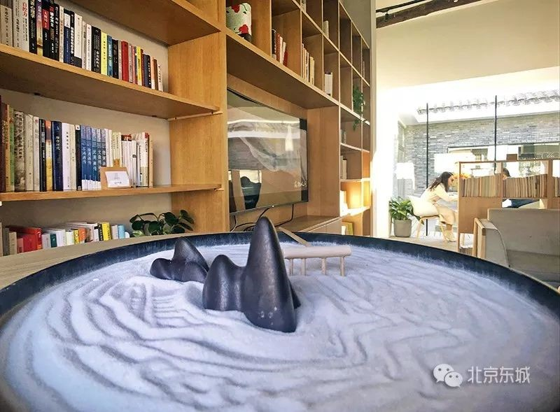

高端会所变“城市客厅”，这个二环里的胡同老院美呆了!
来源：北京东城
东城区协作胡同40号的老四合院近日成了“网红”。从拒人千里之外的高端会所，到周边街坊、游客都能来发呆的“城市客厅”，这座老四合院焕发生机，成为探寻老北京魅力和潮流文化相结合的新去处。
在这里，您可以享受到免费的共享图书馆、胡同影院、艺术展览，捐赠几本书之后，阅读区还能对您24小时开放。这个公共文化空间正式运营3个多月来，迅速走红，高峰日一天要接待五六百人次。
多形态融合免费开放
毗邻叶圣陶故居、海兰察府第、正觉寺等故址名胜，秋天有金黄的银杏叶铺满院落，冬日暖阳下登上二层露台能看到电影《邪不压正》里的北平模样……协作胡同40号的Z-space迅速成为京城打卡热门地，在大众点评、小红书等社交软件上已留下6万多条热评热议。
协作胡同，是一条位于二环核心老城区的百年老胡同。灰墙灰瓦之间，有一处景致显得极为特别——一棵百年古银杏树掩映着一座两进四合院。
从一面中式朱红色大门走进前院，轻柔的音乐下，有人在图书区阅读，有人靠着落地窗在电脑前工作，有人喝着咖啡跟友人轻声聊天……大家都能找到属于自己的舒服方式，享受胡同院落的宁静。
这个院落从2018年秋季开始正式开放，并有了一个新潮的名称：无界空间。近2000平方米的空间内，汇聚了餐饮、展览、影院、书屋、会议室等多种功能，成为胡同里难得的公共活动空间。每天早10点至晚10点，周围居民和游客可以免费在公共区域内读书、办公、看电影。
如果你向书屋捐赠3本图书，还能获得一张书友卡，获得在这里免费通宵阅读的权利。“每周还会有一次沙龙活动，邀请各行各业的大咖玩家进行高质量分享。”Z-space工作人员介绍说。
把四合院还给胡同老邻居
“你们这儿现在能进啦？”每天Z-space的工作人员晓宇都要解答好几遍周边街坊邻里好奇的询问。因为在2018年以前，这里还是一个名为“银杏府”的高端会所，主打“国宴”，且价格不菲。

提及银杏府，协作胡同里的街坊们都直言“从没进去过”。“这些年好像都是会所，营业断断续续的，银杏府开了两三年吧，我们可消费不起！”“听说是办卡会员制的，得有熟人带。之前我晚上从这经过看见过明星！”街坊们回忆，近几年来高档会所的客人逐渐变少，生意越发不行了。
这座四合院在日本设计师青山周平操刀设计之下，经过500天的改造，胡同老院重生为“城市客厅”，不再是神神秘秘、大门紧闭的宅院。
老城区得有文化味生活味
别以为这样的空间只吸引年轻人，晓宇告诉记者，Z-space有不少熟客都是老年朋友。
协和医院退休的刘大夫为了学英语，天天来这里看英文电影，还很爱跟工作人员聊天；北外德语系的一位老教授捐了很多自己写的书给空间图书馆；住在周围的大爷经常看书直到店里打烊…… “在北京，我们希望这个大门常开的百年院落，成为一个温暖的公共空间。”自如总裁熊林说。
这样的半公益项目能盈利吗？自如相关负责人介绍，空间的经营主要靠咖啡厅、餐厅，以及各种公司租赁场地举办活动等。
如何把这种文化空间做得有温度，我们也在摸索。”该负责人表示，最重要的是保留老北京的魅力。以“镇店之宝”古银杏树为例，树龄可以追溯到雍正年间，是国家二级保护古木。无界空间为此打造了很多银杏树的周边产品，如银杏主题的装饰品、塑封银杏叶做成明信片，都备受顾客欢迎。
据悉，前门、南锣鼓巷等街区也都在进行类似的尝试，越来越多改造后的院落将为老城区增添公共文化空间。